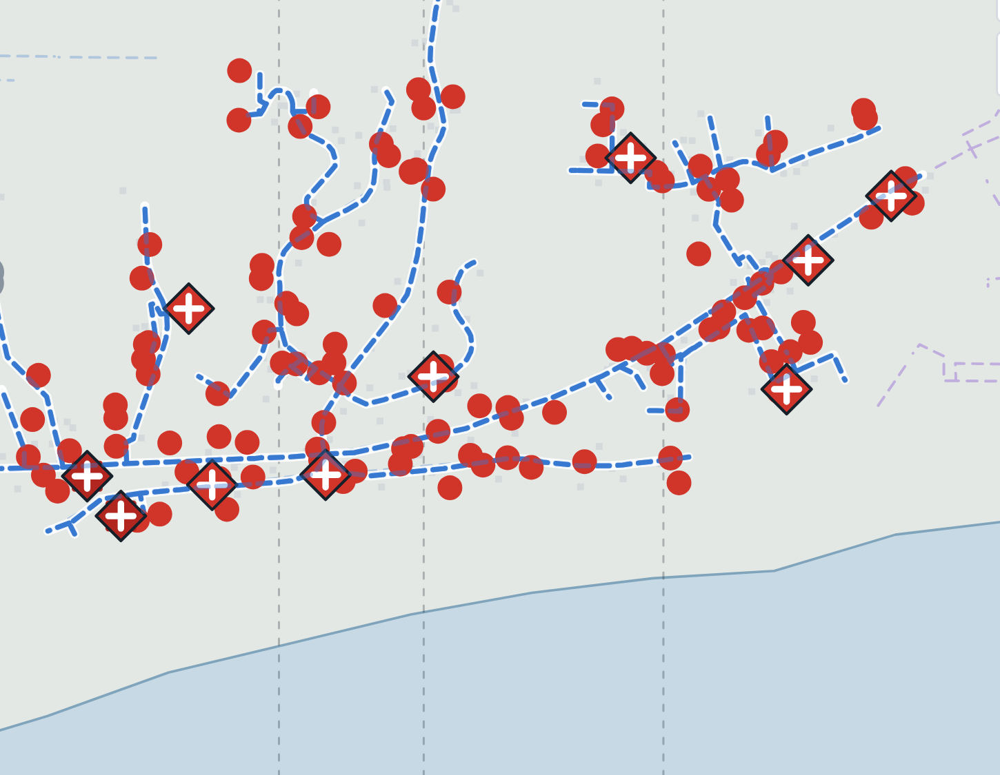
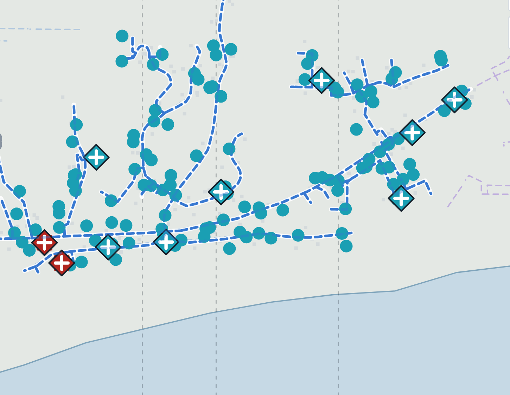

A startup that owns a fleet of Base batteries, with a disaster layer for it: PowerUP plans each home's backup days before a wildfire shutoff, Interlock guards every order in seconds, and neighbors share one island behind SCE's switch.
Every number on this poster is labelled real, assumed or simulated. Reproduce the results with node pilot/app/cli.mjs.
A battery fleet fails in two ways. It is not ready: half empty when the power goes off, with Medical Baseline homes treated like everyone else. Or its own software is the disaster: a sell-down three hours before the shutoff, a stolen key, a replayed order, export onto a line crews think is dead, or a recharge rush that overloads the circuit when it comes back.
189 of them have a battery: our 160 free Base Cores (39.2 kWh, 20 kW) plus 29 of the homes' own. 16 are Medical Baseline homes (assumed share). Upstream, a 66 kV line into Latigo runs about 650 m inside the Bryson perimeter (real, route approximate).
With the guard off, a market bid sells the fleet down to 9% three hours before the shutoff, and every battery home is dark by midnight. With it on, the fleet enters the shutoff at 99% and carries every home to the restart.
Every order to the fleet, from any sender, passes eight checks in order. Each check answers on the gentlest rung that keeps homes and the circuit safe. It can only shrink, slow or stop an order, never create one. PowerUP's own orders pass through it too, and the reserve PowerUP plans for each home becomes the floor Interlock keeps against every sender: our daily optimizer, a market bid and SCE's emergency event.
Orders are shaped like OpenADR 3 events. Policy packs change the limits per region without changing the engine.
Interlock tells why a battery went quiet by what went quiet with it. Before the cell towers fail, PowerUP sends each battery its full plan, so a silent battery keeps following it alone, and homes report over mesh radio to a Starlink dish.


| When (2026) | Injected failure (simulated) | Interlock | What the check found | Guard off |
|---|---|---|---|---|
| Tue Oct 13, 5 PM | SCE emergency event: every home exports 5 kW for 2 hours | Clamp | Slowed on 34 homes so no backup drops below its floor | 189 homes drained |
| Wed Oct 14, 5 PM | Replay: a captured Oct 8 discharge order is sent again | Hold | Issued 8,700 minutes ago, id already seen | 130 kWh drained |
| Thu Oct 15, 1 PM | Market bid: sell every battery down to 10% by 4 PM | Clamp | PowerUP's Fill outranks it; target raised to the floor | 6,668 kWh sold |
| Thu Oct 15, 8 PM | Stolen key posing as SCE: discharge every battery at 20 kW | Hold · hand | Signer not on the trusted list; a person reviews it | 189 batt-hours on a dead line |
| Fri Oct 16, noon | Market export onto the de-energized Cuthbert line | Hold | Circuit open: homes island and serve themselves | 378 batt-hours on a dead line |
| Sun Oct 18, 6 AM | Optimizer rebound: recharge everything at 20 kW when power returns | Clamp | 3.83 MW against a 0.97 MW limit: all slowed to 11% | 3.4 MW over the cap |
PowerUP's own five orders: 5 of 5 pass, none held or clamped. The same run on all six Malibu circuits (1,032 battery homes): 1,028 dark with the guard off, none with it on. At Malibu's real battery share today, 7.1 per 100 homes (SCE interconnection records): 483 of 484 dark with it off, none with it on.
The same 189 battery homes, Cuthbert's real October load shape scaled to the branch (assumed), SCE time-of-use prices (assumed), one SCE event and eleven failures (simulated): a stolen key, a replay, a price glitch, a bad forecast, a market export while SCE has RAR8848 open, and more.
| Guard | Off | On |
|---|---|---|
| Homes drained below their backup | 189 | 0 |
| Export onto the opened line, battery-minutes | 2,385 | 0 |
| Over the branch's 0.97 MW cap, MW-minutes | 306 | 0 |
| Revenue that evening | $2,795 | $3,331 |
Safe and still earning: the guarded fleet makes 1.19 times what the unguarded one does. Interlock doubles as our test bench: replay a new dispatch policy, then roll it out to 1%, 10% and 100% of the fleet.
SCE already opens partial circuits: 13 of the 55 shutoffs on these six circuits since 2019 were opened at a switch on the line (real). The island planner finds homes that go dark only because their feed runs through a risky stretch, and plans an opt-in island behind the existing switch, with SCE opening and closing it. Three hard rules:
SCE can open RAR8848 and run the 456 homes behind it as an island. Our batteries are grid-forming: they set the island's voltage and frequency, not only follow it.
The pilot carries all 16 real shutoffs for every subscriber at the critical budget with clear-sky solar (150 batteries is the minimum), and 15 of 16 with smoke halving the solar (all 16 would take 228).
160 free Base Cores in volunteer homes: Medical Baseline first, then solar roofs, which refill every day. $9.99 a month buys emergency power for a home with no battery (226 homes at an assumed 90% opt-in). In a shutoff, everyone on the island pays $1.20 per kWh, twice SCE's top time-of-use rate (assumed); SCE bills it and keeps $0.20 for delivery, sellers get $1.00. A host uses the bottom 20% of our battery first, at the same price.
| Income per battery | Label | $ / yr |
|---|---|---|
| Trading, CAISO prices for SCE | real prices | 334 |
| Capacity payments | assumed | 941 |
| Emergency grid events | assumed count | 627 |
| Subscriptions | assumed opt-in | 169 |
| Shutoff power sales | assumed rates | 90 |
| Holding full from SCE's notice | real prices | −28 |
Fleet about $2.24M after the 30% tax credit (installed cost assumed), net about $341,000 a year. Payback 6.6 years with all income, 25 on trading, subscriptions and shutoff sales, 46 on trading alone.
Funding DOE SBIR Phase I through the Office of Electricity and CESER first; DOE GRIP with SCE as the applicant to scale; FEMA's Hazard Mitigation Grant Program after a declared disaster, with California's Microgrid Incentive Program for the shared battery. Built: the bridge reports what grant programs score: homes kept powered, Medical Baseline hours protected, overload avoided.
Global South Africa's load shedding is a planned outage, announced ahead and repeated several times a day: PowerUP's ladder running daily, with hospitals and clinics in the Medical Baseline role. Built: region policy packs swap the risk signal, the priority register and the limits without changing the engine.
SCE shutoff records, circuit lines, load profiles and interconnection records; NIFC fire perimeter; California Energy Commission transmission map; CAISO day-ahead prices; NWS Los Angeles forecasts. Switch positions and transformers are estimated.
Misuse: locking owners out of their batteries, a single point of attack, or pricing power up mid-crisis. Limits: Interlock never goes below a home's own backup, PowerUP sees a priority tier, not a medical record, a person approves every restart and island, and the price is fixed in advance.